05 Introduction to RNA-Seq analysis
question Questionsobjectives Objectives
- Download the data from GEO or ENA
- Basic knowledge of downloading data from GEO or ENA
time Time estimation: 15 minutes
Download the slides for this training session.
The dataset comes from a 2014 publication on Human Airway Smooth Muscle Transcriptome Changes in Response to Asthma Medications. The goal of the analysis is to find DE genes (differentially expressed: genes with different expression levels in one group of samples compared to other groups of samples). Typically the groups of samples represent different treatments: one consisting of biological replicates that have received a control treatment, others consisting of replicates that received a specific biological treatment.
In this experiment the data consists of four groups (treatment):
- The dex group: samples from 4 cell lines after treatment with the glucocorticoid dexamethasone (dex), used as astma medication
- The alb group: samples from the same cell lines after treatment with albuterol (alb), another astma medication
- The alb_dex group: samples from the same cell lines after treatment with both astma medications
- The untreated group: samples from the same untreated cell lines cultured in parallel.
So all samples come from the same 4 cell lines (cells).
# run_accession read_count samples cells treatment
1 SRR1039508 22935521 CL1_untreated CL1 untreated
2 SRR1039509 21155707 CL1_Dex CL1 Dex
3 SRR1039510 22852619 CL1_Alb CL1 Alb
4 SRR1039511 21938637 CL1_Alb_Dex CL1 Alb_Dex
5 SRR1039512 28136282 CL2_untreated CL2 untreated
...
The data comes from a paired-end sequencing experiment so we have two files for each sample. For simplicity we will do the analysis on a single sample, SRR1039509, obtained from dexamethasone treated cell line 1.
Quality checks
Before you analyze the data, it is crucial to check the quality of the data. We use the standard tool for checking the quality of NGS data generated on the Illumina platform: FASTQC
Correct interpretation of the FASTQC report is very important. If the quality of your data is good, you can proceed with the analysis. !! If the quality of your data is very bad, don’t immediately throw the data in the recycle bin but contact an expert and ask for his/her opinion. !!
Double click the FASTQC icon on the Desktop and open the fastq file (it’s in the summer folder of your home folder). FASTQC consists of multiple modules each checking a specific aspect of the quality of the data. On the first page you can select the module you wish to view. The names of the modules are preceded by an icon that reflects the quality of the data. The icon indicates whether the results of the module seem normal (green tick), slightly abnormal (orange triangle) or very unusual (red cross).
However, these evaluations must be interpreted in the context of what you expect from your library. A ‘normal’ sample as far as FastQC is concerned is random and diverse. Some experiments may be expected to produce libraries which are biased. You should treat the icons as pointers to where you should concentrate your attention on and understand why your library may not look normal.
General information on the reads
How long are the reads in this file ? 63 nucleotides 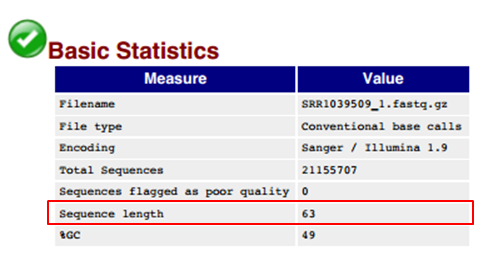
Checking the quality scores of the reads
Phred scores represent base call quality. The higher the score the more reliable the base call. Often the quality of reads degrades over the length of the read. Therefore, it is common practice to determine the average quality of the first, second, third,…nth base by plotting the distribution of the Phred scores on each position of the reads using box plots.
Evaluate the quality scores per position Go to the Per base sequence quality module: 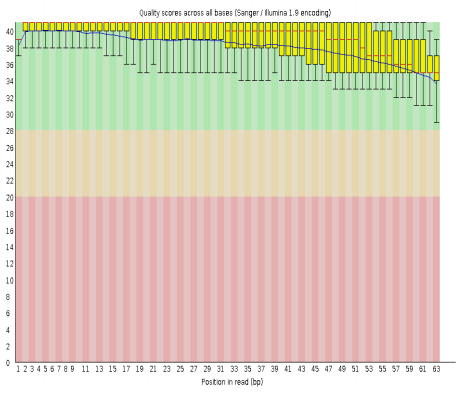 The y-axis on the graph shows the Phred quality scores, the x-axis shows the position in the read. So again you see that the reads are 63 bases long.
The average Phred score is depicted by the blue line, the median Phred score by the red line. The yellow boxes contain 50% of all Phred scores on a certain position. As expected the quality is steadily declining.
The background of the graph divides the y-axis into very good quality calls (green), calls of reasonable quality (orange), and calls of poor quality (red; Phred score < 20). As you can see the Phred scores of this data set are very high.
Remark: In new Illumina kits the sequence quality goes up a bit first before it steadily declines.
Instead of showing the quality of each position separately, you can calculate the average Phred score of each read and show a cumulative plot of the average qualities of all the reads.
Evaluate the overall quality Go to the Per sequence quality scores module: 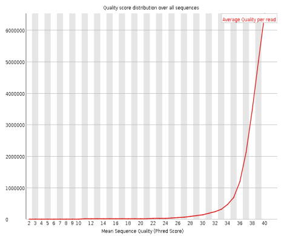 The y-axis on the graph shows the number of reads, the x-axis shows the Phred score.
Most reads have an average Phred score of 40. This is a very high score (Phred scores of Illumina calls range from -5 to 41).
Illumina flow cells are divided into tiles. To see if there is a loss in quality associated with specific parts of the flow cell, FASTQC calculates average quality scores for each tile across all positions in the reads.
Evaluate the quality per tile Go to the Per tile sequence quality module:
The y-axis on the graph shows the tile number, the x-axis shows the position in the reads.
The plot shows the deviation from the average tile quality. The colours are on a cold to hot scale, with blue being the average tile quality and other colours representing tiles where the quality was different from the average. In the example you see that a few tiles show poor quality over a few positions. A good plot should be blue all over. Although the plot isn’t entirely blue the results of this module are still acceptable.
Reasons for seeing warnings or failures on this plot could be transient problems such as bubbles going through the flow cell, or they could be more permanent problems such as smudges or debris on/in the flow cell or a very high density of clusters in a tile. The most common cause of warnings in this module is the flow cell being overloaded.
It is recommended to ignore warnings/failures which mildly affect a small number of tiles for only a few cycles, and to only pursue larger effects which show high deviation in scores, or which persist for a high number of cycles.
Checking duplicates
In a diverse library generated by shearing genomic DNA, most fragments will occur only once. A low level of duplication may indicate a very high level of coverage of some target sequences, but a high level of duplication indicates a bias (eg PCR overamplification, contamination of the library with adapter dimers…).
The Sequence duplication levels module counts the degree of duplication for every read and creates a plot showing the relative number of reads with different degrees of duplication.
Evaluate the sequence duplication levels Go to the Sequence duplication levels module: 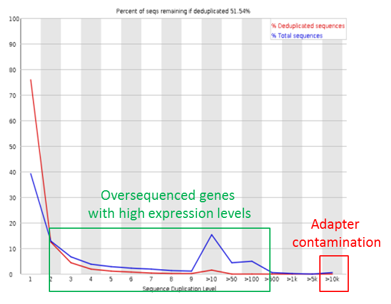 The y-axis on the graph shows the percentage of occurrence, the x-axis shows the duplication level.
The blue line represents the counts of all duplicated sequences. The percentage is computed relative to the total number of reads.
The red line represents the number of distinct sequences that are duplicated. The percentage is computed relative to the total number of distinct sequences in the data (see slides).
Seeing duplication in RNA-Seq data is normal. To sequence lowly expressed genes you must oversequence the genes with high expression levels. However, RNA-Seq libraries may be contaminated with adapters.
The presence of contaminating adapters will produce spikes on the far right of the plot. These peaks will appear in the blue trace as they make up a high proportion of the original library, but usually disappear in the red trace as they make up a small proportion of the deduplicated set (you only use 2 adapters to create a library).
Additionally, as in every RNA-Seq file you also see a substantial number of oversequenced reads with lower duplication levels.
Since the reads are random fragments from the genome sequence, the contribution of A, C, G and T should be identical on each position.
Evaluate the per base sequence content Go to the Per base sequence content module:
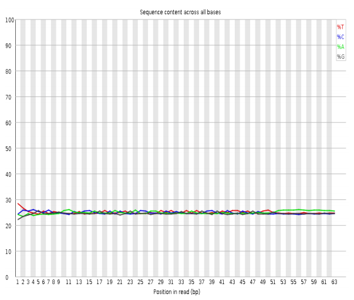
The y-axis on the graph shows the percentage of occurrence, the x-axis shows the position in the read.
On this plot you should see straight lines for the four nucleotides. In reality you often see that this is not the case for the first positions. Libraries produced by priming using random hexamers (nearly all RNA-Seq libraries) and those which were fragmented using transposases inherit an intrinsic bias in the first positions of the reads. This bias does not come from a single sequence, but because of enrichment of a number of different K-mers at the 5’ end of the reads. So it isn’t something you can correct by trimming (you do not have one specific sequence that you can remove from the reads). In most cases it doesn’t adversely affect the downstream analysis but it will produce a warning or failure in this module.
Duplicates often arise because libraries are contaminated with adapter sequences. You can check for contaminating sequences using the Overrepresented sequences module: it lists all sequences which make up more than 0.1% of the total. For each sequence in the list the module will look for matches in a database of common contaminants and will report the best hit it finds.
Which contaminants are found in this library ? Go to the Overrepresented sequences module:

As you can see, a single illumina adapter was found contaminating the library to a small extent: 0,5% of the library consists of adapter sequences.
The Overrepresented sequences module shows contamination with full adapter sequences (= reads that completely correspond to adapters), but often the library also contains reads that have remnants of adapter sequences at their 3’ ends. These reads are not detected by the Overrepresented sequences module.
This was the quality check of one file from one of the 16 samples. We do not have the time to do all quality checks. But in the real world, you would have to do this for each of the 32 files of this experiment.
Improving the quality of the data
There are many possible steps to improve the quality of the data. Due to time constraints, we are going to focus on
- removing adapter sequences, both filtering full adapter sequences and trimming remnants of adapters from the 3’ ends of the reads
- filter reads of low quality
There are many tools to remove adapters from reads, but we chose cutadapt because it works on paired-end reads and it can do the two steps at the same time (removing adapters and filtering reads of poor quality).
To make it feasible to go through the complete RNA-Seq workflow during the training, we have limited the data set to reads that map to chromosome 22. The data come from a paired-end experiment so we have two files with reads. You can download these limited data sets: [http://data.bits.vib.be/pub/trainingen/NGSIntro/chr22_SRR1039509_1.fastq.gz data_set_1] (first reads of a pair that map to chromosome 22) and [http://data.bits.vib.be/pub/trainingen/NGSIntro/chr22_SRR1039509_2.fastq.gz data_set_2] (second reads of a pair that map to chromosome 22). On the bits laptops, the files are already present in the /home/bits/NGS/RNASeq/ folder.
Remember that the Overrepresented sequence module of the FASTQC report showed contamination with the following TruSeq adapter in the first file of sample SRR1039509:
ACACGTCTGAACTCCAGTCACTGACCAATCTCGTATGCCGTCTTCTGCTTGAAAAAAAAAAAA
We will remove this adapter from the file containing the reads that map to chromosome 22.
Open the terminal.
Make a variable called adapter to hold the sequence of the adapter |-
adapter=ACACGTCTGAACTCCAGTCACTGACCAATCTCGTATGCCGTCTTCTGCTTGAAAAAAAAAAAARemember to use Shift + Insert to paste in the terminal !
Check the cutadapt option for defining the number of mismatches you allow (= error rate) Cutadapt is not a regular bash command but a Python script so it doesn’t have a manual. So to open the cutadapt help type:
cutadapt -h
Scrolling down the help file shows that the -e option defines the maximum allowed error rate: the default is 0.1 meaning that it allows one mismatch every 10 nucleotides. Adapters are identified by aligning each read to the adapter sequence: if the frequency of mismatches in the alignment is below the allowed error rate then the adapter is trimmed from the read.
Check the option for defining the adapter sequence In the help file you see that you have multiple options:
- -a to trim adapter sequences at the 3’ end of the reads. In most cases this is the end that is causing the problems: when small RNA fragments are sequenced, the resulting reads can be longer than the RNA fragments. As a results they will contain (parts of) the adapter at their 3’end. In long reads the adapter might even lie within the read:
MYSEQUEN (no adapter contaimination) MYSEQUENCEADAP (part of adapter at 3' end) MYSEQUENCEADAPTER (adapter at 3' end) MYSEQUENCEADAPTERSOMETHINGELSE (adapter within the read)Cutadapt will cut the adapter (part) and all sequence following it resulting in:
MYSEQUEN MYSEQUENCE MYSEQUENCE MYSEQUENCE - -g to trim adapter sequences at the 5’ end of the reads. These adapters are expected to appear at the start of a read (where they can be just partially there) or somewhere within the read:
ADAPTERMYSEQUENCE (5' end) DAPTERMYSEQUENCE (partial) TERMYSEQUENCE (partial) SOMETHINGADAPTERMYSEQUENCE (within)In all cases, the adapter itself and the sequence preceding it will be removed, leaving in all examples above:
MYSEQUENCE - -b to trim adapters at the 3’ or 5’ end of the read. If there is at least one base before the adapter, then the adapter is trimmed as a 3’ adapter and the adapter itself and everything following it is removed. Otherwise, the adapter is trimmed as a 5’ adapter and it is removed from the read, but the sequence after it remains:
Before trimming After trimming MYSEQUENCEADAPTERSOMETHING MYSEQUENCE MYSEQUENCEADAPTER MYSEQUENCE MYSEQUENCEADAP MYSEQUENCE MADAPTER M ADAPTERMYSEQUENCE MYSEQUENCE PTERMYSEQUENCE MYSEQUENCE TERMYSEQUENCE MYSEQUENCE
Since we have contaminating adapter at the 3’end we’ll take the -a option
We will use a few other options:
- Discard trimmed reads that are shorter than 20 bases after trimming using the -m option
- Trim low-quality bases at the 3’ends from reads before adapter removal if their Phred score is less than 10 using the -q option
Check the -q option in the help file Scroll down to the Additional modifications to the reads: section to check the usage of the -q option:
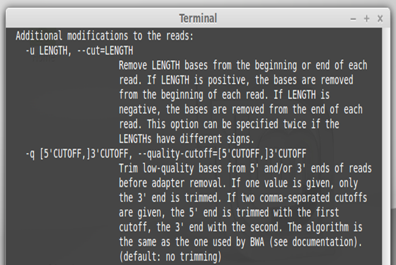
Check the -m option in the help file Scroll up to the Options for filtering of processed reads: section to check the usage of the -m option:
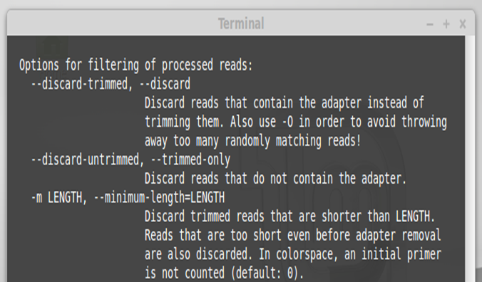
Remember that we are working with paired-end reads !
Check the usage of cutadapt for paired-end reads in the help file Scroll up to the start of the help file to check the usage of cutadapt for paired-end reads:
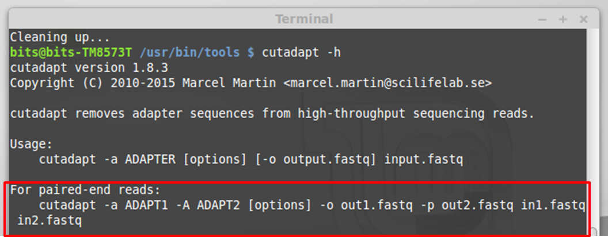
Since we have to specify the location in the file system of two input and two output files, we are going to create a variable called folder for holding the path.
Create the variable path |-
folder=/home/bits/NGS/RNASeq/
Remember to use tab autocompletion.
Clean up the files using the knowledge you have obtained |-
cutadapt -a ${adapter} -q 10 -m 20 -o ${path}chr22_SRR1039509_1t.fastq -p ${path}chr22_SRR1039509_2t.fastq ${path}chr22_SRR1039509_1.fastq.gz ${path}chr22_SRR1039509_2.fastq.gz
- -a to specify the sequence of the adapter and to specify that we want to cut adapter sequences from the 3’ends of the reads
- -q to specify the minimal quality score is 10. Bases at the 3’end of the reads with a quality score below 10 will be removed
- -m to specify the minimal length of the read after trimming. Reads smaller than 20 bases will be removed
- -o to specify the location in the file system where you want to write the output files
- -p to specify the location in the file system where you want to write the results for the reads from the other end of the fragments. As such you specify that these are paired-end reads.
In the cutadapt stats you see we only trimmed one file (containing sequences from one end of the fragments).

That is because the sequences from the other end of the fragments contain another adapter:
GTCGTGTAGGGAAAGAGTGTAGATCTCGGTGGTCGCCGTATCATTAAAAAAAAAAAAAAAAAA
Redefine the adapter variable |-
adapter=GTCGTGTAGGGAAAGAGTGTAGATCTCGGTGGTCGCCGTATCATTAAAAAAAAAAAAAAAAAARemember to use Shift + Insert to paste in the terminal.
Run cutadapt again to remove the other adapter Remember to switch the two files now:
cutadapt -a ${adapter} -q 10 -m 20 -o ${path}chr22_SRR1039509_2trim.fastq -p ${path}chr22_SRR1039509_1trim.fastq ${path}chr22_SRR1039509_2t.fastq ${path}chr22_SRR1039509_1t.fastqRemember to use the up arrow to go back in the history.
Now you see in the cutadapt stats that you have trimmed adapters from (both files) both ends of the fragments.
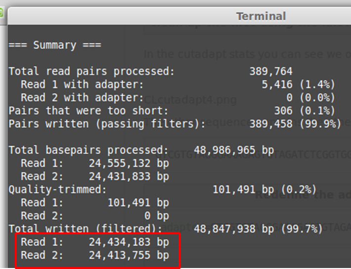
Check the quality of the cleaned reads
I have done this also for the complete files and rechecked the trimmed reads in FASTQC. You can download the report for the complete trimmed reads from sample SRR1039509.
Are all the reads still 63 nt long after trimming ? In the Basic statistics tab you see that the length of the reads varies between 20 (in the cutadapt command we set 20 as the minimal length for a read to be retained) and 63 (reads that were not trimmed):

Have the quality scores of the reads significantly changed after trimming ? The Per base sequence quality is similar to that of the untrimmed file, as is the Per sequence quality.
Quality scores have of course changed a bit since we trimmed low quality bases, but the initial quality of the reads was so good that you don’t really see the effect of the trimming.
Has the per base sequence content improved as a result of the trimming ? The Per base sequence content - the tool to detect adapter contamination - plot has improved, it’s even more stable now.
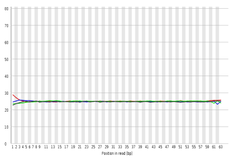
What is the little bump you see in the Sequence length distribution plot ?
Apparently many reads contain 3 bases that belong to the adapter. These 3 bases have been cut leaving reads of 60 nt long: this is the small peak you see on the plot at length 60. All intermediate lengths of adapter contamination have been detected but in such a small fraction of reads that you cannot see the influence of the trimming on the plot.
Are there any overrepresented sequences left ? No.

Are there any overrepresented heptamers ? FASTQC still detects overrepresented heptamers although at much lower counts than before.

FastQC confirmed the removal of the two adapters by cutadapt.
Mapping
Obtaining the reference genome
Before we can do any mapping we need a reference sequence first. We will map the reads against the hg19 human genome build. Mapping requires a specially formatted file (hash database). This hash database can be derived from the reference genome using the bowtie2 tools. However, for some organisms like human the hash table can be obtained ‘ready-to-use’ from the bowtie2 website. If you also need a fasta copy of the hg19 genome, you can obtain it from the hash table using bowtie2. We can download the hash table from the bowtie2 website using the wget command. It takes about 90 minutes to download so we are not going to download it during the training, it is already present in the /home/bits/NGS/RNASeq/reference/ folder.
Go to this folder and look at its contents. As you can see the file is a compressed .zip file
Unzip the reference genome file To decompress a .zip file you need the unzip command:
unzip hg19.zip
It will take a few minutes and it will generate 7 files:
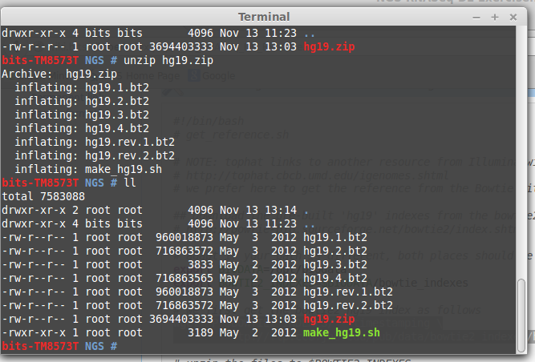
To transform the hash table into a fasta sequence we use bowtie2. From the bowtie2 documentation we learn that we should use bowtie2-inspect without options to generate the fasta file.
Generate the human reference genome sequence in fasta format. The required command simply is:
bowtie2-inspect hg19 > hg19.fa
The > sign indicates that the output of the command (so the fasta file with the reference sequence) needs to be written to a file called hg19.fa. It will take a few minutes to generate the file.
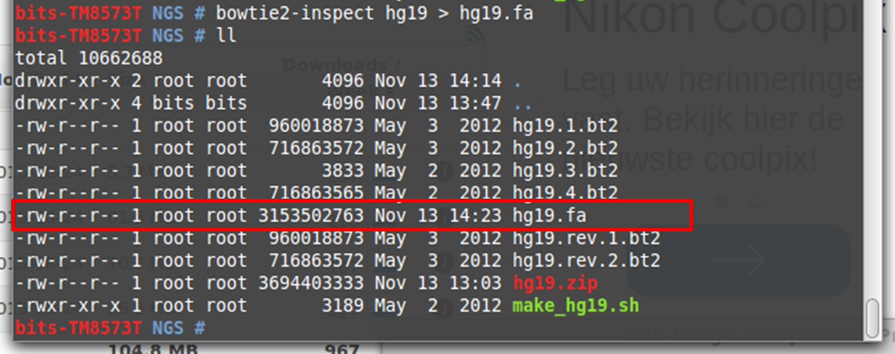
Installing TopHat
Mapping RNA-Seq reads is done using the TopHat tool. So we need to install the TopHat tool.
Go to the TopHat website and fetch the download link.
- Go to the TopHat website
- Right click the Linux download link
- Select Copy Link Location
Download the file.
- Go to the terimnal
- Navigate to the /usr/bin/NGS/ folder
- Type **wget **
- Press the Shift and Insert keys simultaneously to paste the url
TopHat is downloaded as a .tar.gz file
Decompress the file For decompressing a .tar.gz file you need the following command:
tar -xzvf tophat-2.1.0.Linux_x86_64.tar.gzRemember to use tab autocompletion !
This creates a new folder:
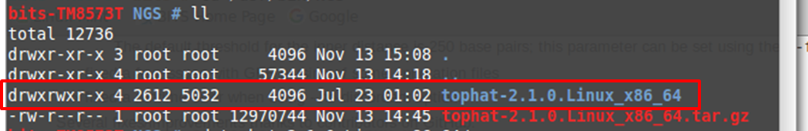
Go into the tophat folder and type:
./tophat
If this opens the help of tophat, it means the software has been installed correctly. It does not mean that you can use the software now. Well you can but you will always have to type the commands from inside the tophat folder or provide the full path to the tophat folder. To avoid this we can create a symbolic link for tophat2.
Create a symbolic link for tophat2 For creating the link you need the following command:
ln -s /usr/bin/NGS/tophat-2.1.0.Linux_x86_64/tophat2 /usr/local/bin/tophat2Remember to use tab autocompletion !
Now go to a different folder and type tophat2. If you see the help file, the link works.
Installing samtools
When you navigate to the tophat folder in /usr/bin/NGS/ you see that samtools is automatically installed when TopHat was installed:

If you see the samtools help page when you type
./samtools_0.1.18
it means that samtools is indeed installed

If you want to use samtools from anywhere in the file system you can create a soft link.
Create a soft link for samtools. Create a link using the ln -s command:
ln -s /usr/bin/NGS/tophat-2.1.0_Linux_x86_64/samtools-0.1.18/samtools /usr/local/bin/samtoolsGo up one directory in the file system and check if the command works. If you type
samtools view(one of the possible samtools commands) you should see the manual of the command.
Mapping the reads
We are not going to do the actual mapping since it takes almost 25 minutes even with the chromosome22-limited datasets. If we were to map the reads we would use the following command:
folder=/home/bits/NGS/RNASeq/
tophat2 --no-coverage-search ${folder}reference/hg19 ${folder}chr22_SRR1039509_1.fastq.gz ${folder}chr22_SRR1039509_2.fastq.gz
- –no-coverage-search: is related to how TopHat finds splice junctions. I’m not going to go into detail here but in the TopHat manual the developers of TopHat say: “We only suggest users use the –coverage-search option for short reads (< 45bp) and with a small number of reads (<= 10 million).” Since we have the double amount of longer reads (63bp) we have to go for the –no-coverage-search option.
- the first argument is the location of the hash table of the reference genome
- the second argument is the (cleaned) fastq file containing the reads from one end of the fragments. As you can see TopHat can work directly on the compressed file.
- the third argument is the (cleaned) fastq file containing the reads from the other end of the fragments
Other useful options for Tophat:
- -p: the number of processors (cpu) that TopHat can use for the mapping. The default is 1. This is ok for a laptop since laptops do not contain manu cpu but of course the more cpu you give TopHat the faster the mapping. So it’s better to do the mapping on a strong computer with many cpu
- -o: if you want to store the results of the mapping in another folder
The mapping generates a new folder tophat_out containing 3 .bed files and 2 .bam files containing the resulting alignments:
- accepted_hits.bam: a list of read alignments.
- unmapped.bam: a list of reads that could not be mapped. As you can see the size of this file is quite small compared to the accepted_hits.
- junctions.bed: a list of splice junctions between exons in UCSC BED format (that can be opened as a track in the UCSC genome browser). Tophat can find novel - not yet annotated - splice junctions based on the alignment of the reads to a reference genome. This is what Tophat is specifically good at, compared to mappers like bwa and bowtie which will only find annotated splice junctions. This is why we use Tophat for mapping RNA-Seq data.
- insertions.bed: a list of insertions.
- deletions.bed: a list of deletions.
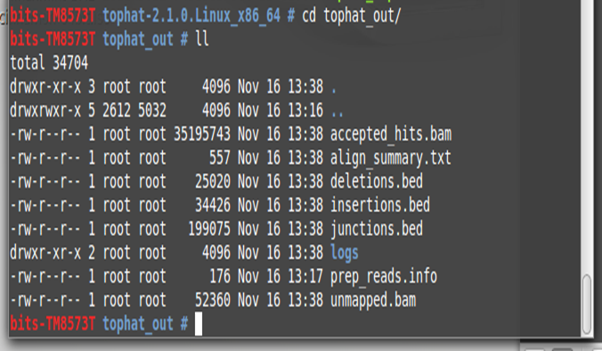 Since we haven’t actually done the mapping, we do not have this folder. However, you can find the bam file with the read alignments in the /home/bits/NGS/RNASeq folder.
Quality control of the mapping
It is vital to check the quality of mapping before proceeding with the RNASeq workflow. The mapping to a reference genome has sorted the reads and it is now possible to identify
- the regions of the genome the reads originate from
- duplicate reads
- RNA degradation…
Several program exist to perform quality control of bam files; e.g. RSeQC pubmed: 22743226, QualiMap pubmed: 22914218 , samtools, deeptools pubmed: 24799436 , Picard which is part of the very popular GATK platform - pubmed: 20644199…
We are going to use samtools here.
Get the basic stats of the bam file.
On the samtools wiki
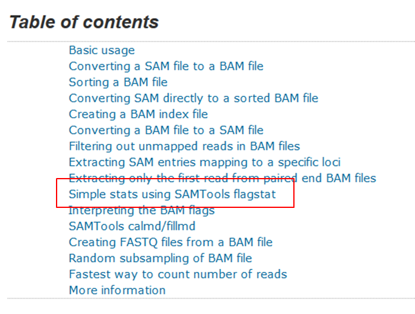
You can see that you need the samtools flagstat command for this. The bam file is in the /home/bits/NGS/RNASeq/ folder so we are going to reuse the folder variable that we created for the mapping:
folder=/home/bits/NGS/RNAseq/
samtools_0.1.18 flagstat ${folder}accepted_hits_chr22.bam
or if you have done the mapping yourself:
samtools_0.1.18 flagstat /usr/bin/NGS/tophat-2.1.0_Linux_x86_64/tophat_out/accepted_hits_chr22.bam
The samtools flagstat command displays an overview of the alignment results on your screen. You just see that 100% of the reads were mapped. This is extremely high but it is of course because we reversed engineered our chromosome 22 limited data set. From the complete fastq files we took the reads that mapped to chromosome 22 so it’s normal that we get an almost perfect mapping.
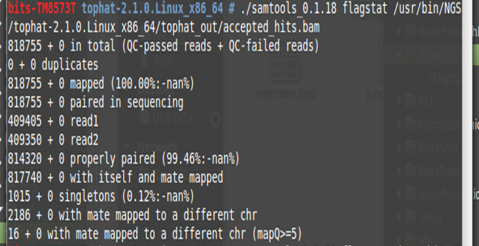
This overview deserves some explanation:
- nan means Not A Number (e.g: divided by 0 )
- paired in sequencing means reads that belong to a pair regardless of the fact that they are really mapped as a pair
- read1 means forward reads
- read2 means reverse reads
- properly paired means that both mates of a read pair map to the same chromosome, oriented towards each other, and with a sensible insert size
- with itself and mate mapped means that both reads of a pair map to the genome but they are not necessarily properly paired, they just map somewhere on the genome
- singletons means that one of the reads of a pair is unmapped while its mate is mapped
- with mate mapped to a different chr means reads with a mate mapped on a different chromosome
- with mate mapped to a different chr (mapQ >= 5) means reads with a mate mapped on a different chromosome having a mapping quality greater than 5
Compare the number of forward and reverse reads in the paired-end experiment.
the counts of forward and reverse reads are to be found on the lines ending with read1 and read2 respectively. As you see the number of forward reads exceeds the number of reverse reads by 55.
How many reads were mapped as a pair in the paired-end experiment?
814320 reads were properly mapped as a pair, that’s 99,46% of the total number of reads.
Tools like Qualimap, RSeqQC and Picard will give much more detailed information on the quality of the mapping. Unfortunately we do not have time to use them.
Calculating a count table
In order to compute differential expression between groups of samples, we need to convert mapping results to read counts for each gene in each sample. The counting can also be done in R using various packages but will be slower as compared to command-line tools. We will use the popular HTSeq-count tool to compute gene counts.
Prepare the alignment file
We need to sort the bam file since we have paired-end reads. HTSeq assumes the file is sorted so that reads belonging to the same pair are in adjacent lines. If you don’t sort the bam file by read name, HTSeq will think there are lot of reads with missing mates. In the samtools manual we can look up which command we need to do the sorting.
Sort the reads in the .bam file by name As you can see in the manual the samtools sort command sorts .bam files:
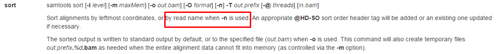
The input and output file are located in the /home/bits/NGS/RNASeq/ folder (or the /usr/bin/NGS/tophat-2.1.0.Linux_x86_64/tophat_out/ folder if you have done the mapping yourself). We are going to create a folder variable:
folder=/home/bits/NGS/RNASeq/
samtools_0.1.18 sort -n ${folder}accepted_hits.bam ${folder}accepted_hits_sort
Go to the folder where input and output file are stored and check if the sorted .bam file was generated: According to the HTSeq manual the input file for HTSeq contains the aligned reads in SAM format. In our case the mapping generated a .bam file. Fortunately samtools contains scripts to convert BAM format to SAM.
In the samtools manual we can look up which command we need to do the transformation.
Transform the .bam into a .sam file
As you can see in the manual the samtools view command can transform any alignment format into standard SAM format:
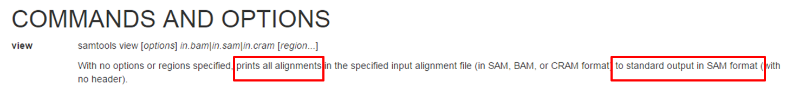
We are going to reuse the folder variable:
samtools_0.1.18 view ${folder}accepted_hits_sort.bam > ${folder}accepted_hits.sam
Go to the folder where input and output file are stored and check if the .sam file was generated.
Obtaining a reference annotation file
To calculate read counts we need a gtf file containing the annotation of all exons. You can obtain such files from genome annotation databases such as NCBI, Ensembl, and UCSC. The problem is that there are small differences between the formats of annotation files coming from different databases. These differences have implications for counting the reads. For instance, we used pre-built index files from the Bowtie website for the mapping. These files have UCSC format. So it seems obvious to use UCSC annotation files for the counting. However, HTSeq prefers Ensembl gtf files. As stated in the HTSeq documentation using gtf file generated by UCSC will result in very low counts. In the UCSC files, the gene_id incorrectly contains the same value as the transcript_id. Hence, if a read maps to an exon shared by several transcripts of the same gene, this will appear to htseq-count as an overlap between different genes since the different transcripts have different gene_ids. The read will be considered ambiguous and not counted. Therefore, the counts will be incorrect. As a solution, HTSeq recommends to use a gtf file from Ensembl. You can find Ensembl gtf files on the Ensembl ftp server. The version that we need is called grch37 (this corresponds to UCSC genome build hg19). So you can download the gtf file from this web site.
Navigate to the /home/bits/NGS/RNASeq/reference/ folder:
Decompress the gtf file.
.gz files are decompressed by the gunzip command:gunzip Homo_sapiens.GRCh37.82.gtf.gzUse Tab autocompletion for the name of the file.
Look at the first 10 lines of the gtf file.
Use the head command to preview the file:head Homo_sapiens.GRCh37.82.gtfUse Tab autocompletion for the name of the file.
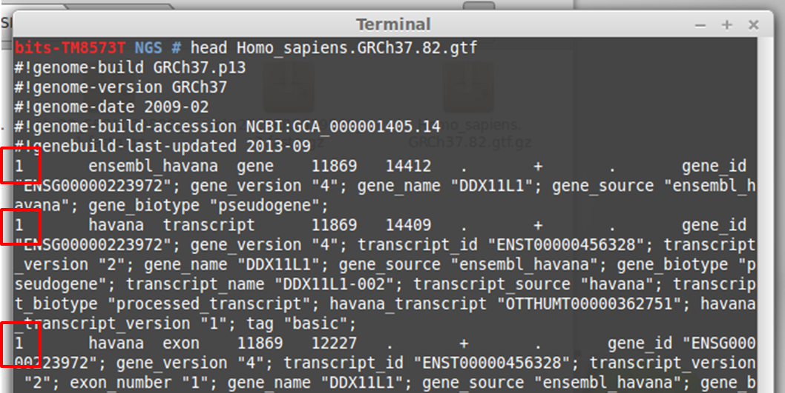
As you can see the first column of the file contains chromosome numbers. Ensembl uses 1, 2, 3… as chromosome IDs.
Look at the first 10 lines of the sam file.
Use the head command to preview the file:head accepted_hits.samUse Tab autocompletion for the name of the file.
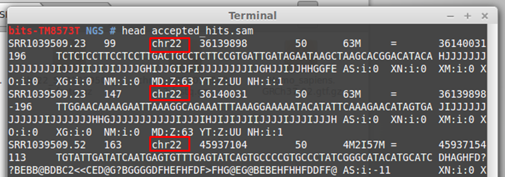
As you can see the third column of the file contains chromosome IDs but they have UCSC format: chr22 (remember that all reads come from chromosome 22 in our example). So we need to:
- Filter the annotation for chromosome 22 from the gtf file to limit processing time.
- Transform Ensembl chromosome IDs into UCSC format.
First of all we’ll give the gtf file a simple name to simplify processing.
Use the move command to rename the file to hg19_EnsGene.gtf
Use the mv command to rename the file:mv Homo_sapiens.GRCh37.82.gtf ./hg19_EnsGene.gtfThe ./ defines to move the file to the current folder (the folder that you are in when you type the command). So you will move the file to the same folder but under another name, which corresponds to just renaming it.
Filter chromsome 22 annotations from the gtf file. Name the resulting file chr22_Ens.gtf Chromosome 22 annotations are lines starting with 22. Use the grep command to filter the file:
grep "^22" hg19_EnsGene.gtf > chr22_Ens.gtfThe ^ defines the start of a line. So ^22 means: search for lines that start with 22.
Look at the first 10 lines of the filtered gtf file.
Use the head command to preview the file:head chr22_Ens.gtfUse Tab autocompletion for the name of the file.
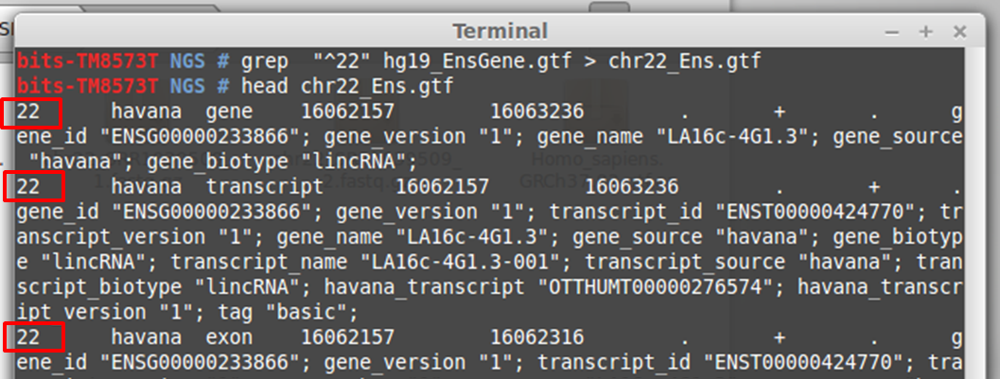
Now, we still need to transform the Ensembl chromosome IDs into UCSC format, meaning that we simply need to add the prefix chr to each line in the filtered gtf file. You’ll need the sed command for this. Look at the sed documentation the sed documentation] before you try to do the substitution. To add the word chr to the start of each line, you essentially need to replace the start of a line by chr.
Add the prefix to each line of the gtf file. Name the resulting file chr22_Ens_corr.gtf To do a replacement or substitution you need to use the s command, followed by what you want to replace and what to replace it with, each separated by a /. Remember from the filtering exercise that the start of a line is represented by ^. So use the following command to make the substitution:
sed 's/^/chr/' chr22_Ens.gtf > chr22_Ens_corr.gtfUse Tab autocompletion for the name of the file.
Look at the first 10 lines of the substituted gtf file.
Use the head command to preview the file:head chr22_Ens_corr.gtfUse Tab autocompletion for the name of the file.

Installing HTSeq
HTSeq is a Python script. Python scripts can be installed using the pip install command. Remember you need administrator privileges for installing tools.
Try to install HTSeq. What happens ?
Use the following command to install the tool:pip install HTSeq
As you can see this generates an error and the tool is not installed.
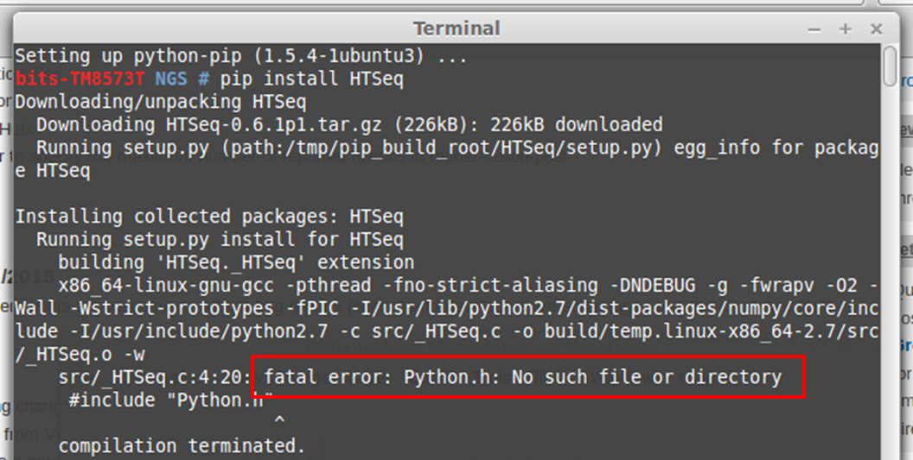
Looking up the error in Google leads to this web page, where you can find the solution to the problem: some dependencies are missing.
Install the missing dependencies and try again. What happens ?
Use the following command to install the dependencies:apt-get install python-dev
Then try to install HTseq again:
pip install HTSeq
As you can see this generates a new error and the tool is not installed.

Looking up the error in Google leads to this web page, where you can find the solution to the problem: the C compiler is missing.
Install the missing compiler and try again. What happens ?
Use the following command to install the dependencies:apt-get install g++
Then try to install HTseq again:
pip install HTSeq
As you can see this does not generate an error. To check if the tool works type:
htseq-count
If this displays the help file, you know that the tool was correctly installed
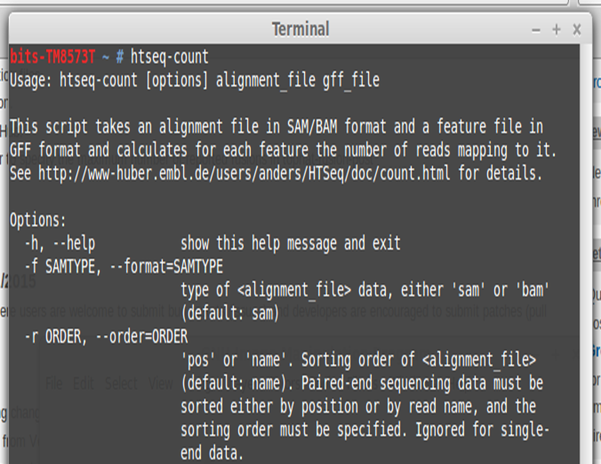
Calculating the count table
HTSeq counts reads in different modes: HTSeq
{kind=link}
In the HTSeq manual we get an overview of the options we can use.
How to define that we want to use the union mode ? The -m option allows to define the mode: 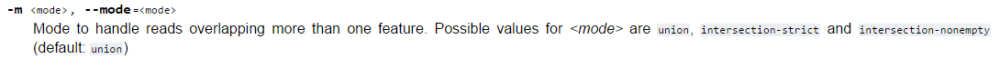
How to define that this was not a strand-specific experiment ? The -s option allows to define if a strand-specific library was used: 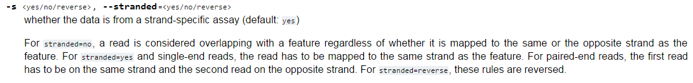
How to define the minimum alignment quality score for a read to be counted ? The -a option allows to define the minimum alignment score: 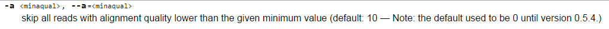
We’ll go for the default mininimum alignment score of 10 (90% confidence).
How to define we want to count based on exon annotation ? The -t option allows to define the feature to base the count on: 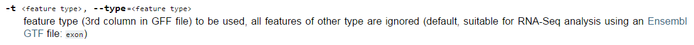
For a .gtf file exon is the default. It means HTSeq will count the number of reads that align to each exon and then combine the counts for all exons of a transcript variant.
How to define the feature we want to use as an ID after the counting ? The -i option allows to define the feature to use as ID.
For a .gtf file gene_id is the default: it means that the output of HTSeq will be a list of gene_ids and for each gene_id you’ll see the number of reads that align to all its exons.
Calculate the count table HTSeq was installed by pip install which automatically creates a link. So the HTSeq commands will work from anywhere in the file system. We will go to the folder that contains the input sam file: /home/bits/NGS/RNAseq/ and run the command from there or create a variable folder containing the path. In the HTSeq manual we get an overview of the options we can use. Default options should not be defined.
folder=/home/bits/NGS/RNAseq/ htseq-count -m union -s no ${folder}accepted_hits.sam ${folder}reference/chr22_Ens_corr.gtf > ${folder}chr22_counts.txt
View the first 10 lines of the resulting count table
head chr22_counts.txt
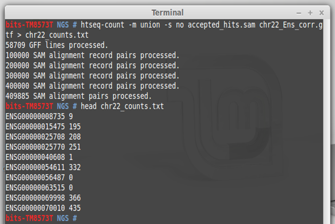 You nicely see the read counts for each gene…
keypoints Key points
- SRA ID
- GEO
- ENA